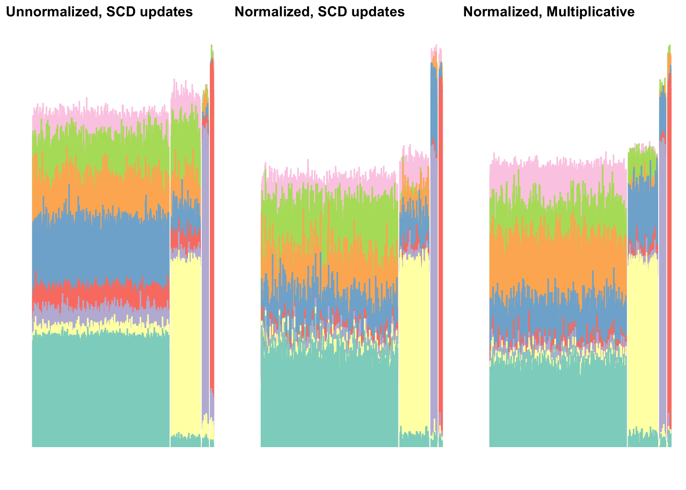
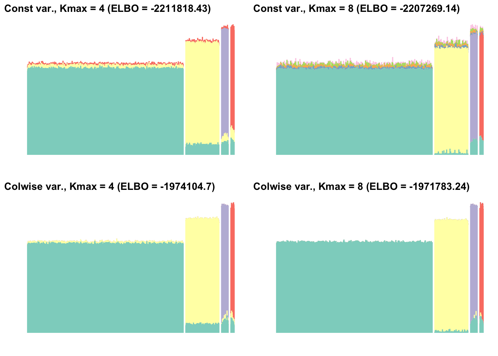

Last updated: 2025-08-26
Checks: 7 0
Knit directory: ebnmf-paper/
This reproducible R Markdown analysis was created with workflowr (version 1.7.1). The Checks tab describes the reproducibility checks that were applied when the results were created. The Past versions tab lists the development history.
Great! Since the R Markdown file has been committed to the Git repository, you know the exact version of the code that produced these results.
Great job! The global environment was empty. Objects defined in the global environment can affect the analysis in your R Markdown file in unknown ways. For reproduciblity it’s best to always run the code in an empty environment.
The command set.seed(20231214) was run prior to running
the code in the R Markdown file. Setting a seed ensures that any results
that rely on randomness, e.g. subsampling or permutations, are
reproducible.
Great job! Recording the operating system, R version, and package versions is critical for reproducibility.
Nice! There were no cached chunks for this analysis, so you can be confident that you successfully produced the results during this run.
Great job! Using relative paths to the files within your workflowr project makes it easier to run your code on other machines.
Great! You are using Git for version control. Tracking code development and connecting the code version to the results is critical for reproducibility.
The results in this page were generated with repository version e2e1b48. See the Past versions tab to see a history of the changes made to the R Markdown and HTML files.
Note that you need to be careful to ensure that all relevant files for
the analysis have been committed to Git prior to generating the results
(you can use wflow_publish or
wflow_git_commit). workflowr only checks the R Markdown
file, but you know if there are other scripts or data files that it
depends on. Below is the status of the Git repository when the results
were generated:
Ignored files:
Ignored: .DS_Store
Ignored: .Rhistory
Ignored: .Rproj.user/
Ignored: analysis/lps_fail_fix_cache/
Ignored: analysis/sim_scenario1_cache/
Ignored: analysis/sim_scenario2_cache/
Ignored: analysis/sim_scenario3_cache/
Untracked files:
Untracked: analysis/simdata3.Rmd
Untracked: matlab/simdata3.m
Untracked: matlab/simdata3.mat
Untracked: matlab/simdata3_nmf_sW=0.5.mat
Untracked: matlab/simdata3_nmf_sW=0.6.mat
Untracked: matlab/simdata3_nmf_vanilla.mat
Untracked: matlab/simdata_scenario1.m
Untracked: matlab/simdata_scenario1.mat
Untracked: matlab/simdata_scenario1_k=4_sW=
Untracked: matlab/simdata_scenario1_k=4_sW=0.1.mat
Untracked: matlab/simdata_scenario1_k=4_sW=0.2.mat
Untracked: matlab/simdata_scenario1_k=4_sW=0.3.mat
Untracked: matlab/simdata_scenario1_k=4_sW=0.4.mat
Untracked: matlab/simdata_scenario1_k=4_sW=0.5.mat
Untracked: matlab/simdata_scenario1_k=4_sW=0.6.mat
Untracked: matlab/simdata_scenario1_k=4_sW=0.7.mat
Untracked: matlab/simdata_scenario1_k=4_sW=0.8.mat
Untracked: matlab/simdata_scenario1_k=4_sW=0.9.mat
Untracked: matlab/simdata_scenario1_k=8_sW=
Untracked: matlab/simdata_scenario1_k=8_sW=0.1.mat
Untracked: matlab/simdata_scenario1_k=8_sW=0.2.mat
Untracked: matlab/simdata_scenario1_k=8_sW=0.3.mat
Untracked: matlab/simdata_scenario1_k=8_sW=0.4.mat
Untracked: matlab/simdata_scenario1_k=8_sW=0.5.mat
Untracked: matlab/simdata_scenario1_k=8_sW=0.6.mat
Untracked: matlab/simdata_scenario1_k=8_sW=0.7.mat
Untracked: matlab/simdata_scenario1_k=8_sW=0.8.mat
Untracked: matlab/simdata_scenario1_k=8_sW=0.9.mat
Untracked: matlab/simdata_scenario1_nmf_k=4.mat
Untracked: matlab/simdata_scenario1_nmf_k=4_sW=0.5.mat
Untracked: matlab/simdata_scenario1_nmf_k=8.mat
Untracked: matlab/simdata_scenario1_nmf_sW=0.3.mat
Untracked: matlab/simdata_scenario1_nmf_sW=0.4.mat
Untracked: matlab/simdata_scenario1_nmf_sW=0.5.mat
Untracked: matlab/simdata_scenario1_nmf_sW=0.6.mat
Untracked: matlab/simdata_scenario1_nmf_sW=0.8.mat
Untracked: matlab/simdata_scenario1_nmf_vanilla.mat
Untracked: matlab/simdata_scenario2.asv
Untracked: matlab/simdata_scenario2.m
Untracked: matlab/simdata_scenario2.mat
Untracked: matlab/simdata_scenario2_k=3_sW=0.1.mat
Untracked: matlab/simdata_scenario2_k=3_sW=0.2.mat
Untracked: matlab/simdata_scenario2_k=3_sW=0.3.mat
Untracked: matlab/simdata_scenario2_k=3_sW=0.4.mat
Untracked: matlab/simdata_scenario2_k=3_sW=0.5.mat
Untracked: matlab/simdata_scenario2_k=3_sW=0.6.mat
Untracked: matlab/simdata_scenario2_k=3_sW=0.7.mat
Untracked: matlab/simdata_scenario2_k=3_sW=0.8.mat
Untracked: matlab/simdata_scenario2_k=3_sW=0.9.mat
Untracked: matlab/simdata_scenario2_k=8_sW=0.1.mat
Untracked: matlab/simdata_scenario2_k=8_sW=0.2.mat
Untracked: matlab/simdata_scenario2_k=8_sW=0.3.mat
Untracked: matlab/simdata_scenario2_k=8_sW=0.4.mat
Untracked: matlab/simdata_scenario2_k=8_sW=0.5.mat
Untracked: matlab/simdata_scenario2_k=8_sW=0.6.mat
Untracked: matlab/simdata_scenario2_k=8_sW=0.7.mat
Untracked: matlab/simdata_scenario2_k=8_sW=0.8.mat
Untracked: matlab/simdata_scenario2_k=8_sW=0.9.mat
Untracked: matlab/simdata_scenario2_nmf_k=6.mat
Untracked: matlab/simdata_scenario2_nmf_sW=0.2.mat
Untracked: matlab/simdata_scenario2_nmf_sW=0.3.mat
Untracked: matlab/simdata_scenario2_nmf_sW=0.4.mat
Untracked: matlab/simdata_scenario2_nmf_sW=0.5.mat
Untracked: matlab/simdata_scenario2_nmf_sW=0.6.mat
Untracked: matlab/simdata_scenario2_nmf_vanilla.mat
Untracked: matlab/simdata_scenario3.mat
Untracked: matlab/simdata_scenario3_k=12_sW=0.1.mat
Untracked: matlab/simdata_scenario3_k=12_sW=0.2.mat
Untracked: matlab/simdata_scenario3_k=12_sW=0.3.mat
Untracked: matlab/simdata_scenario3_k=12_sW=0.4.mat
Untracked: matlab/simdata_scenario3_k=12_sW=0.5.mat
Untracked: matlab/simdata_scenario3_k=12_sW=0.6.mat
Untracked: matlab/simdata_scenario3_k=12_sW=0.7.mat
Untracked: matlab/simdata_scenario3_k=12_sW=0.8.mat
Untracked: matlab/simdata_scenario3_k=12_sW=0.9.mat
Untracked: matlab/simdata_scenario3_k=7_sW=0.1.mat
Untracked: matlab/simdata_scenario3_k=7_sW=0.2.mat
Untracked: matlab/simdata_scenario3_k=7_sW=0.3.mat
Untracked: matlab/simdata_scenario3_k=7_sW=0.4.mat
Untracked: matlab/simdata_scenario3_k=7_sW=0.5.mat
Untracked: matlab/simdata_scenario3_k=7_sW=0.6.mat
Untracked: matlab/simdata_scenario3_k=7_sW=0.7.mat
Untracked: matlab/simdata_scenario3_k=7_sW=0.8.mat
Untracked: matlab/simdata_scenario3_k=7_sW=0.9.mat
Untracked: output/sim_scenario1.rds
Unstaged changes:
Modified: analysis/sim_scenario1.Rmd
Modified: analysis/sim_scenario3.Rmd
Modified: analysis/simdata2.Rmd
Modified: code/sim_functions.R
Modified: matlab/simdata2.mat
Note that any generated files, e.g. HTML, png, CSS, etc., are not included in this status report because it is ok for generated content to have uncommitted changes.
These are the previous versions of the repository in which changes were
made to the R Markdown (analysis/sim_scenario1a.Rmd) and
HTML (docs/sim_scenario1a.html) files. If you’ve configured
a remote Git repository (see ?wflow_git_remote), click on
the hyperlinks in the table below to view the files as they were in that
past version.
| File | Version | Author | Date | Message |
|---|---|---|---|---|
| Rmd | e2e1b48 | Jason Willwerscheid | 2025-08-26 | workflowr::wflow_publish("analysis/sim_scenario1a.Rmd") |
library(R.matlab)
library(tibble)
library(dplyr)
library(tidyr)
library(stringr)
library(ggplot2)
library(cowplot)
library(ebnm)
library(flashier)
library(fastTopics)
library(RcppML)
source("./code/sim_functions.R")To allow for objective comparisons among methods, we restrict ourselves to scenarios where the matrix of true means is separable. In topic modeling terms, each topic must feature at least one “anchor word” (a word that appears in that topic and nowhere else) and there must be at least one “pure” document per topic. In the simplest such scenario, which we will consider here, all documents are pure.
To begin, let there be four populations, respectively consisting of
1175, 250, 50, and 25 “pure” documents. We code population memberships
using a binary \(1500 \times 4\)
component matrix \(L\), with \(L_{ik} = 1\) if document \(i\) belongs to population \(k\) and \(L_{ik}
= 0\) otherwise. Topics are given by a \(2000 \times 4\) component matrix \(F\). For separability, we include 10 anchor
words per topic. For these 40 words, \(F_{jk}
= 1\) if word \(j\) is an anchor
word for topic \(k\) and \(F_{jk} = 0\) otherwise. The remaining \(1960 \times 4\) entries \(F_{jk}\) are simulated from a Gamma
distribution with shape parameter \(2\)
and scale parameter \(1/2\) (i.e., mean
\(1\) and variance \(1/2\)), so that all entries \(F_{jk}\) are similar in magnitude. We
define the matrix of “true means” as \(\mu =
LF'\). We then simulate the data matrix \(Y\) using a log1p link
function; that is, we simulate count \(X_{ij}\) from a Poisson distribution with
mean \(e^{\mu_{ij}} - 1\), then set
\(Y_{ij} = \log(X_{ij} + 1)\).
sim_data <- function(ns, p, gamma_shape, gamma_scale = 1 / gamma_shape, n_anchor_words = 10) {
pops <- rep(LETTERS[1:length(ns)], times = ns)
L <- matrix(0, nrow = sum(ns), ncol = 4)
L[, 1] <- c(rep(1, ns[1]), rep(0, sum(ns[2:4])))
L[, 2] <- c(rep(0, ns[1]), rep(1, ns[2]), rep(0, sum(ns[3:4])))
L[, 3] <- c(rep(0, sum(ns[1:2])), rep(1, ns[3]), rep(0, ns[4]))
L[, 4] <- c(rep(0, sum(ns[1:3])), rep(1, ns[4]))
F <- sim_F(p, 4, gamma_shape, gamma_scale, n_anchor_words)
X <- sim_X(L, F)
return_sim_data(X, L, F, pops)
}
set.seed(1)
example_sim <- sim_data(c(1175, 250, 50, 25), 2000, 4)
Y <- example_sim$Y
Ynorm <- example_sim$Ynorm
L <- example_sim$L
pops <- example_sim$popsAs is common practice, we fit NMF by running multiple trials and choosing the fit with the lowest error.
nmf_k4_res <- run_nmf(Y, k = 4)Results vary slightly from one trial to the next:
nmf_k4_worst_res <- run_nmf(Y, k = 4, seeds = which.max(nmf_k4_res$all_mse))
nmf_k4_p1 <- plot_nmf(
nmf_k4_res$fit, L, pops,
paste0("Best fit, 10 trials (MSE = ", round(min(nmf_k4_res$all_mse), 4), ")")
)
nmf_k4_p2 <- plot_nmf(
nmf_k4_worst_res$fit, L, pops,
paste0("Worst fit, 10 trials (MSE = ", round(nmf_k4_worst_res$all_mse, 4), ")")
)
plot_grid(nmf_k4_p1, nmf_k4_p2, nrow = 1)Even though we set our simulation parameters so that counts are similar in magnitude across words, normalization helps:
nmf_norm_k4_res <- run_nmf(Ynorm, k = 4)
nmf_norm_k4_worst_res <- run_nmf(Ynorm, k = 4, seeds = which.max(nmf_norm_k4_res$all_mse))
nmf_norm_k4_p1 <- plot_nmf(
nmf_norm_k4_res$fit, L, pops,
paste0("Best fit, 10 trials (MSE = ", round(min(nmf_norm_k4_res$all_mse), 4), ")")
)
nmf_norm_k4_p2 <- plot_nmf(
nmf_norm_k4_worst_res$fit, L, pops,
paste0("Worst fit, 10 trials (MSE = ", round(nmf_norm_k4_worst_res$all_mse, 4), ")")
)
plot_grid(nmf_norm_k4_p1, nmf_norm_k4_p2, nrow = 1)The best fit here comes close to the representation we’re looking for: one separate topic for each of the four populations.
To improve upon these results, it should suffice merely to “sparsify” the components. Lee and Seung’s multiplicative updates are known to sometimes produce sparser “parts-based” representations, so let’s see whether results differ using their method:
nmf_lee_k4_res <- run_nmf(Ynorm, k = 4, method = "lee")
nmf_lee_k4_worst_res <- run_nmf(Ynorm, k = 4, seeds = which.max(nmf_lee_k4_res$all_mse))
nmf_lee_k4_p1 <- plot_nmf(
nmf_lee_k4_res$fit, L, pops,
paste0("Best fit, 10 trials (MSE = ", round(min(nmf_lee_k4_res$all_mse), 4), ")")
)
nmf_lee_k4_p2 <- plot_nmf(
nmf_lee_k4_worst_res$fit, L, pops,
paste0("Worst fit, 10 trials (MSE = ", round(nmf_lee_k4_worst_res$all_mse, 4), ")")
)
plot_grid(nmf_lee_k4_p1, nmf_lee_k4_p2, nrow = 1)Results are very similar.
In practice, of course, the “true” number of components \(K\) will almost always be unknown (if a true number can even be said to exist!). If, for example, we set \(K = 8\), the four “true” components become much more difficult to find:
nmf_k8_res <- run_nmf(Y, k = 8)
nmf_k8_p <- plot_nmf(
nmf_k8_res$fit, L, pops,
paste0("Unnormalized, SCD")
)
nmf_norm_k8_res <- run_nmf(Ynorm, k = 8)
nmf_norm_k8_p <- plot_nmf(
nmf_norm_k8_res$fit, L, pops,
paste0("Normalized, SCD")
)
nmf_lee_k8_res <- run_nmf(Ynorm, k = 8, method = "lee")
nmf_lee_k8_p <- plot_nmf(
nmf_lee_k8_res$fit, L, pops,
paste0("Normalized, Multiplicative")
)
plot_grid(nmf_k8_p, nmf_norm_k8_p, nmf_lee_k8_p, nrow = 1)
In general, then, we’d like not only to sparsify the “true” components, but also to minimize or eliminate redundant components.
First we’ll attempt to sparsify results by putting an L1 penalty on
the document loadings matrix (the topics themselves are not very sparse,
so we’ll ignore the word loadings matrix for now). An L1 penalty has
been implemented in a number of R packages, including NNLM
and RcppML. Note, however, that these packages implement
the penalty very differently.
NNLM has been widely used, but using it to perform
sparse NMF is difficult because there is no obvious scale for the L1
penalty. Further, we need to penalize both component matrices
to see much of a difference in results. (It’s possible that
NNLM does not handle the issue that without penalizing
\(H\), an L1 penalty on \(W\) can be circumvented by simply
decreasing the magnitude of \(W\) and
correspondingly increasing the magnitude of \(H\). We should look into this.)
nnlm_k4_plots <- list()
nnlm_k4_t <- numeric()
for (L1pen in c(.001, .01, .1, 1, 2, 5)) {
next_res <- run_sparse_nmf(Ynorm, k = 4, L1pen = L1pen)
next_p <- plot_nmf(next_res$fit, L, pops, paste0("L1 penalty = ", L1pen))
nnlm_k4_plots <- c(nnlm_k4_plots, list(next_p))
nnlm_k4_t <- c(nnlm_k4_t, next_res$t[3])
}
plot_grid(plotlist = nnlm_k4_plots, nrow = 2, ncol = 3)So NNLM achieves some sparsification. We were however
unable to find a setting of the L1 penalty that completely sparsifies
the blue and yellow components. (Setting the L1 penalty much larger than
5 will cause the estimated component matrices to be zeroed out.)
For sparse NMF,RcppML is both faster and simpler to use.
Its L1 penalty (which, we emphasize, functions much differently from the
L1 penalty of NNLM) ranges from 0 to 1, so we could use a
straightforward grid-based approach.
rcppml_k4_plots <- list()
rcppml_k4_t <- numeric()
for (L1pen in c(.01, seq(0.1, 0.8, by = 0.1))) {
next_res <- run_RcppML_sparse_nmf(Ynorm, k = 4, L1pen = L1pen)
next_p <- plot_nmf(next_res$fit, L, pops, paste0("L1 penalty = ", L1pen))
rcppml_k4_plots <- c(rcppml_k4_plots, list(next_p))
rcppml_k4_t <- c(rcppml_k4_t, next_res$t[3])
}
plot_grid(plotlist = rcppml_k4_plots, nrow = 3, ncol = 3)Setting the L1 penalty between 0.1 and 0.3 gives us almost exactly the representation we desire. Larger settings give poor results (between 0.4 and 0.7, the third and fourth populations are no longer distinguished). So the quality of the representation very much depends on getting the L1 penalty “correct.”
Another option is to use the Hoyer penalty:
hoyer_k4_plots <- list()
for (i in 1:9) {
next_res <- readMat(paste0("matlab/simdata_scenario1_k=4_sW=0.", i, ".mat"))
hoyer_k4_plots[[i]] <- plot_nmf(next_res, L, pops, paste0("sW = 0.", i))
}
plot_grid(plotlist = hoyer_k4_plots, nrow = 3, ncol = 3)For sW under 0.6, results are very similar. Setting sW = 0.6 gives a good result, with some noise remaining in the blue and red components. Above sW = 0.6, results are very poor. So again, we can get a good representation, but choosing the “correct” setting of sW is crucial.
With \(K = 8\), we can again get excellent results provided that we set the sparsity parameter “correctly”.
Using NNLM:
nnlm_k8_plots <- list()
nnlm_k8_t <- numeric()
for (L1pen in c(.001, .01, .1, 1, 2, 4)) {
next_res <- run_sparse_nmf(Ynorm, k = 8, L1pen = L1pen)
next_p <- plot_nmf(next_res$fit, L, pops, paste0("L1 penalty = ", L1pen))
nnlm_k8_plots <- c(nnlm_k8_plots, list(next_p))
nnlm_k8_t <- c(nnlm_k8_t, next_res$t[3])
}
plot_grid(plotlist = nnlm_k8_plots, nrow = 2, ncol = 3)RcppML:
rcppml_k8_plots <- list()
rcppml_k8_t <- numeric()
for (L1pen in seq(0.1, 0.9, by = 0.1)) {
next_res <- run_RcppML_sparse_nmf(Ynorm, k = 8, L1pen = L1pen)
next_p <- plot_nmf(next_res$fit, L, pops, paste0("L1 penalty = ", L1pen))
rcppml_k8_plots <- c(rcppml_k8_plots, list(next_p))
rcppml_k8_t <- c(rcppml_k8_t, next_res$t[3])
}
plot_grid(plotlist = rcppml_k8_plots, nrow = 3, ncol = 3)Hoyer:
hoyer_k8_plots <- list()
for (i in 1:9) {
next_res <- readMat(paste0("matlab/simdata_scenario1_k=8_sW=0.", i, ".mat"))
hoyer_k8_plots[[i]] <- plot_nmf(next_res, L, pops, paste0("sW = 0.", i))
}
plot_grid(plotlist = hoyer_k8_plots, nrow = 3, ncol = 3)Next we run EBNMF, initializing using NMF results:
ebnmf_nmfinit_k4_res <- run_ebnmf_from_nmf(Ynorm, nmf_norm_k4_res$fit, var_type = 2)
ebnmf_nmfinit_k4_p <- plot_fl(
ebnmf_nmfinit_k4_res$fit, L, pops,
paste0("NMF init., Kmax = 4 (ELBO = ", round(ebnmf_nmfinit_k4_res$fit$elbo, 2), ")")
)
ebnmf_nmfinit_k8_res <- run_ebnmf_from_nmf(Ynorm, nmf_norm_k8_res$fit, var_type = 2)
ebnmf_nmfinit_k8_p <- plot_fl(
ebnmf_nmfinit_k8_res$fit, L, pops,
paste0("NMF init., Kmax = 8 (ELBO = ", round(ebnmf_nmfinit_k8_res$fit$elbo, 2), ")")
)
plot_grid(ebnmf_nmfinit_k4_p, ebnmf_nmfinit_k8_p, nrow = 1)
# --Estimate of factor 8 is numerically zero!
# --Estimate of factor 8 is numerically zero!
# --Estimate of factor 6 is numerically zero!
# --Estimate of factor 6 is numerically zero!
# --Estimate of factor 3 is numerically zero!
# --Estimate of factor 7 is numerically zero!
# --Estimate of factor 7 is numerically zero!Somewhat surprisingly, we get better results using the NMF initialization with the incorrect number of components. Indeed, the fit initialized using the 8-topic NMF fit appears as good as or better than all of the sparse NMF fits we obtained using \(K = 8\). And we didn’t need to set any sparsity parameters!
In our simulations, we’ll consider a few other EBNMF methods:
Wang and Stephens suggest using a “greedy” approach to initialize factors, and then “backfitting” to refine the EBNMF fit. We refer to this approach as “greedy + backfit.”
We’ve found with NMF that the greedy approach occasionally doesn’t add enough factors. Intuitively, additional components can only increase the fitted values, so that if one component “overshoots” it cannot be adjusted downward until components are backfitted. Thus it can be useful to repeat the “greedy + backfit” approach multiple times until the greedy step no longer adds any new factors. We refer to this method as the “bulk alternating” approach.
Instead of adding multiple greedy components before backfitting, we might backfit after each new component is added (add one component greedily, backfit, and repeat until the greedy step fails). We refer to this last method as the “strict alternating,” or more simply the “alternating” approach.
These approaches yield the following results. For illustration, we also show some intermediate fits.
fl_g <- flash(Ynorm, var_type = 2, greedy_Kmax = 8, ebnm_fn = ebnm_point_exponential, verbose = 0)
fl_b <- fl_g |> flash_backfit(verbose = 0)
p_g <- plot_fl(fl_g, L, pops, paste0("Greedy (ELBO = ", round(fl_g$elbo, 2), ")"))
p_b <- plot_fl(fl_b, L, pops, paste0("Backfit (ELBO = ", round(fl_b$elbo, 2), ")"))
fl_bulkalt_g <- fl_b |> flash_greedy(Kmax = 4, ebnm_fn = ebnm_point_exponential, verbose = 0)
fl_bulkalt_b <- fl_bulkalt_g |> flash_backfit(verbose = 0)
# Further iterations do not yield any new factors.
p_bulkalt_g <- plot_fl(fl_bulkalt_g, L, pops,
paste0("Second greedy (ELBO = ", round(fl_bulkalt_g$elbo, 2), ")"))
p_bulkalt_b <- plot_fl(fl_bulkalt_b, L, pops,
paste0("Second backfit (ELBO = ", round(fl_bulkalt_b$elbo, 2), ")"))
fl_alt_k4 <- run_alternating(Ynorm, Kmax = 4, var_type = 2)
fl_alt_k8 <- run_alternating(Ynorm, Kmax = 8, var_type = 2)
p_alt_k4 <- plot_fl(fl_alt_k4$fit, L, pops,
paste0("Alternating, Kmax = 4 (ELBO = ", round(fl_alt_k4$fit$elbo, 2), ")"))
p_alt_k8 <- plot_fl(fl_alt_k8$fit, L, pops,
paste0("Alternating, Kmax = 8 (ELBO = ", round(fl_alt_k8$fit$elbo, 2), ")"))
plot_grid(p_g, p_b, p_bulkalt_g, p_bulkalt_b, p_alt_k4, p_alt_k8, nrow = 3, ncol = 2)# --Estimate of factor 2 is numerically zero!
# --Estimate of factor 3 is numerically zero!
# --Estimate of factor 4 is numerically zero!Since EBNMF can perform column-wise variance estimation, we don’t actually need to normalize the count matrix in advance. Running EBNMF on the unnormalized data yields the following:
ebnmf_nmfinit_k4_res <- run_ebnmf_from_nmf(Y, nmf_k4_res$fit, var_type = 2)
ebnmf_nmfinit_k4_p <- plot_fl(
ebnmf_nmfinit_k4_res$fit, L, pops,
paste0("NMF initialization, Kmax = 4 (", round(ebnmf_nmfinit_k4_res$fit$elbo, 2), ")")
)
ebnmf_nmfinit_k8_res <- run_ebnmf_from_nmf(Y, nmf_k8_res$fit, var_type = 2)
ebnmf_nmfinit_k8_p <- plot_fl(
ebnmf_nmfinit_k8_res$fit, L, pops,
paste0("NMF initialization, Kmax = 8 (", round(ebnmf_nmfinit_k8_res$fit$elbo, 2), ")")
)
fl_g <- flash(Y, var_type = 2, greedy_Kmax = 8, ebnm_fn = ebnm_point_exponential, verbose = 0)
fl_b <- fl_g |> flash_backfit(verbose = 0)
p_g <- plot_fl(fl_g, L, pops, paste0("Greedy (ELBO = ", round(fl_g$elbo, 2), ")"))
p_b <- plot_fl(fl_b, L, pops, paste0("Backfit (ELBO = ", round(fl_b$elbo, 2), ")"))
# Further iterations do not yield any new factors.
fl_alt_k4 <- run_alternating(Y, Kmax = 4, var_type = 2)
fl_alt_k8 <- run_alternating(Y, Kmax = 8, var_type = 2)
p_alt_k4 <- plot_fl(fl_alt_k4$fit, L, pops,
paste0("Alternating, Kmax = 4 (ELBO = ", round(fl_alt_k4$fit$elbo, 2), ")"))
p_alt_k8 <- plot_fl(fl_alt_k8$fit, L, pops,
paste0("Alternating, Kmax = 8 (ELBO = ", round(fl_alt_k8$fit$elbo, 2), ")"))
plot_grid(ebnmf_nmfinit_k4_p, ebnmf_nmfinit_k8_p, p_g, p_b, p_alt_k4, p_alt_k8, nrow = 3, ncol = 2)# --Estimate of factor 2 is numerically zero!
# --Estimate of factor 5 is numerically zero!
# --Estimate of factor 5 is numerically zero!
# --Estimate of factor 8 is numerically zero!
# --Estimate of factor 8 is numerically zero!Note that unlike with normalization, the magnitudes of the four components are similar (as they should be!). Further, the greedy + backfit and alternating approaches choose the correct number of components.
Part 2 of this analysis will continue with the “fully separated topics” scenario. We’ll compare some of these methods using objective measures over a range of different simulation settings.
For all NMF and sparse NMF methods, we’ll use package
RcppML, both because it is much faster than package
NNLM and because its results appear to be somewhat more
robust to the setting of the sparsity parameter. (In the examples above,
the update method does not seem to make much of a difference.) As is
common practice, we’ll do 10 trials and choose the fit with the lowest
reconstruction error. We’ll consider results with the L1 penalty set to
0 (i.e., vanilla NMF), 0.1 (a conservative approach), 0.3 (more
aggressive), 0.5 (very aggressive), and 0.7 (probably too aggressive,
especially when \(K = 4\)). In each
case, we’ll normalize the data before running NMF. This gives five NMF
and sparse NMF methods.
Additionally, we’ll consider the following EBNMF approaches: NMF initialization; bulk alternating; and strict alternating. For the alternating methods, we’ll consider results for both normalized and unnormalized data. This gives five EBNMF methods.
sessionInfo()
# R version 4.5.1 (2025-06-13)
# Platform: aarch64-apple-darwin20
# Running under: macOS Sequoia 15.5
#
# Matrix products: default
# BLAS: /Library/Frameworks/R.framework/Versions/4.5-arm64/Resources/lib/libRblas.0.dylib
# LAPACK: /Library/Frameworks/R.framework/Versions/4.5-arm64/Resources/lib/libRlapack.dylib; LAPACK version 3.12.1
#
# locale:
# [1] en_US.UTF-8/en_US.UTF-8/en_US.UTF-8/C/en_US.UTF-8/en_US.UTF-8
#
# time zone: America/New_York
# tzcode source: internal
#
# attached base packages:
# [1] stats graphics grDevices utils datasets methods base
#
# other attached packages:
# [1] RcppML_0.3.7 fastTopics_0.6-192 flashier_1.0.56 ebnm_1.1-34
# [5] cowplot_1.2.0 ggplot2_3.5.2 stringr_1.5.1 tidyr_1.3.1
# [9] dplyr_1.1.4 tibble_3.3.0 R.matlab_3.7.0 workflowr_1.7.1
#
# loaded via a namespace (and not attached):
# [1] tidyselect_1.2.1 viridisLite_0.4.2 farver_2.1.2
# [4] R.utils_2.13.0 fastmap_1.2.0 lazyeval_0.2.2
# [7] promises_1.3.3 digest_0.6.37 lifecycle_1.0.4
# [10] processx_3.8.6 invgamma_1.2 magrittr_2.0.3
# [13] compiler_4.5.1 rlang_1.1.6 sass_0.4.10
# [16] progress_1.2.3 tools_4.5.1 yaml_2.3.10
# [19] data.table_1.17.8 knitr_1.50 labeling_0.4.3
# [22] prettyunits_1.2.0 htmlwidgets_1.6.4 scatterplot3d_0.3-44
# [25] RColorBrewer_1.1-3 Rtsne_0.17 withr_3.0.2
# [28] purrr_1.1.0 R.oo_1.27.1 grid_4.5.1
# [31] git2r_0.36.2 colorspace_2.1-1 scales_1.4.0
# [34] gtools_3.9.5 cli_3.6.5 rmarkdown_2.29
# [37] crayon_1.5.3 generics_0.1.4 RcppParallel_5.1.10
# [40] rstudioapi_0.17.1 httr_1.4.7 pbapply_1.7-2
# [43] cachem_1.1.0 splines_4.5.1 parallel_4.5.1
# [46] softImpute_1.4-3 vctrs_0.6.5 Matrix_1.7-3
# [49] jsonlite_2.0.0 callr_3.7.6 hms_1.1.3
# [52] mixsqp_0.3-54 ggrepel_0.9.6 irlba_2.3.5.1
# [55] horseshoe_0.2.0 trust_0.1-8 plotly_4.11.0
# [58] jquerylib_0.1.4 glue_1.8.0 ps_1.9.1
# [61] uwot_0.2.3 stringi_1.8.7 Polychrome_1.5.4
# [64] gtable_0.3.6 later_1.4.2 quadprog_1.5-8
# [67] NNLM_0.4.4 pillar_1.11.0 htmltools_0.5.8.1
# [70] truncnorm_1.0-9 R6_2.6.1 rprojroot_2.1.0
# [73] evaluate_1.0.4 lattice_0.22-7 R.methodsS3_1.8.2
# [76] RhpcBLASctl_0.23-42 SQUAREM_2021.1 ashr_2.2-63
# [79] httpuv_1.6.16 bslib_0.9.0 Rcpp_1.1.0
# [82] deconvolveR_1.2-1 whisker_0.4.1 xfun_0.52
# [85] fs_1.6.6 getPass_0.2-4 pkgconfig_2.0.3